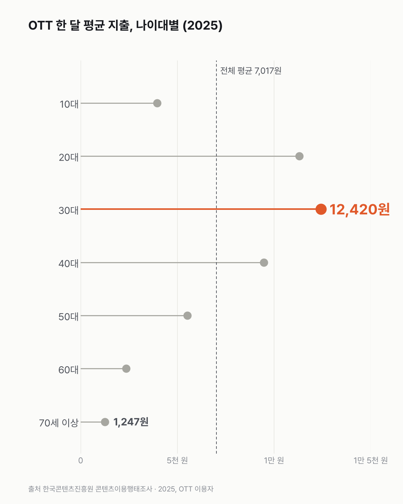

OTT에 쓰는 돈, 30대는 70세 이상의 열 배예요
OTT에 돈을 쓰는 건 주로 20~30대예요. 안 쓰는 10~40대가 가장 많이 꼽은 이유는 '무료 영상으로 충분해서'였어요.

- 30대 OTT 이용자는 한 달에 평균 12,420원, 70세 이상은 1,247원을 써요.
- 무료 OTT만 쓰는 사람까지 넣은 OTT 이용자 전체 평균은 7,017원이에요.
- 유료 OTT를 안 쓰는 10~40대는 61~72%가 '유튜브 같은 무료 영상으로 충분하다'고 했어요.
유료 OTT를 쓰는 비율은 50대와 60대 사이에서 크게 꺾여요. 50대는 53.9%로 절반을 넘는데, 60대는 24.0%예요. 젊은 쪽으로 가면 20대 83.6%, 30대 83.0%이고, 70세 이상은 5.7%예요. 10대는 65.4%가 쓰는데 스스로 쓰는 돈은 월 3,948원이에요. 가족 계정을 같이 쓰는 경우가 섞였을 수 있는데, 이 표로는 확인이 안 돼요.
전체 평균은 7,017원이었어요. 그런데 이용자의 56.3%는 한 달 지출이 5천 원 미만이에요(0원 포함). 이 '이용자'엔 유튜브처럼 무료 OTT만 쓰는 사람도 들어 있어요. 유료 이용자만 놓은 보도 값(월 1만909원)과 다른 이유예요.
지출도 나이대마다 차이가 커요. 30대 12,420원, 20대 11,300원. 60대는 2,360원, 70세 이상은 1,247원이에요. 열 배. 30대는 27.0%가 한 달 2만 원 넘게 써요.
안 쓰는 사람은 왜 안 쓰는지가 남았어요. 그래서 하나 더 찾아봤어요. 유료 OTT를 안 쓰는 10~40대는 61~72%가 '유튜브 같은 무료 영상으로 충분하다'고 했어요. 50대 이상은 'TV 방송으로 충분하다'가 1위였고, 70세 이상은 85.7%나 돼요. '비용이 부담'은 전체 22.6%로 세 번째예요.

OTT 하나에 적당하다고 보는 값은 평균 6,001원이에요. 30대는 8,049원, 20대는 7,803원. 물론 지출은 쓰는 OTT 전체를 더한 돈이고 이 값은 하나 기준이라, 둘을 바로 견주진 않았어요. 광고를 보는 대신 싼 광고형 요금제를 쓰는 사람은 34.8%예요.
젊은 쪽엔 유튜브, 나이 든 쪽엔 TV. 안 쓰는 사람들은 이미 충분한 게 있다고 답했어요. 그럼 매달 돈을 내는 사람들에겐 무엇이 충분하지 않았던 걸까요?
이 숫자는 어디서 왔나요
출처
기준일 2025년이에요. 조사는 7월부터 약 3개월 동안 했고, 한 해 값만 있어 추이는 없어요.
한국콘텐츠진흥원콘텐츠이용행태조사
- 최근 1년 월평균 OTT 이용 지출 금액KOSIS DT_467001_B020원본 보기
나이대별 월 지출 평균·구간
- 유료 구독형 OTT 1개 적정 이용료KOSIS DT_467001_B022원본 보기
1개월 기준 적당하다고 보는 값
- 최근 1년 유료 구독형 OTT 이용 여부KOSIS DT_467001_A002원본 보기
유료 이용률(10세 이상 6,554명 중)
- 유료 구독형 OTT 미이용 이유KOSIS DT_467001_D001원본 보기
안 쓰는 사람(3,006명)의 이유, 중복응답
- 광고형 요금제 이용 현황KOSIS DT_467001_B013원본 보기
광고형 요금제 이용 비율(응답자 3,262명 중)
어떻게 셌나요
- 10세 이상을 직접 만나 묻는 면접 조사예요. 금액은 응답자가 기억해서 답한 값이에요.
- 표마다 분모가 달라요. 유료 OTT 이용률은 10세 이상 6,554명, 안 쓰는 이유는 유료 OTT를 안 쓰는 3,006명, 광고형 요금제는 응답자 3,262명 가운데서 셌어요.
- 한 달 지출 평균은 최근 1년 OTT 이용자 전체(5,841명)로 낸 값이에요. 유튜브 같은 광고 기반 무료 OTT만 쓰는 사람도 들어 있어서 0원 응답이 섞여요. 보도의 '유료 OTT 이용자 월 1만909원'은 유료 이용자만 놓은 보고서 값이라 이 평균(7,017원)과 달라요.
- 지출은 쓰는 OTT를 모두 더한 돈이고, 적정 이용료는 OTT 1개 기준이에요. 그래서 둘을 바로 견줘 '비싸다'고 하지 않았어요.
- 안 쓰는 이유는 여러 개를 고를 수 있어요(중복응답). 그래서 이유별 비율을 더하면 100%를 넘어요.
한계 4가지
이 데이터로 말할 수 없는 것
- 한 해 값이라 요금 인상 전후 변화는 알 수 없어요.
- 응답자 기억에 의한 금액이에요. 계정 공유·통신사 제휴로 내는 돈이 0원일 수 있어요.
- 20대(133명)·30대(153명) 미이용자는 표본이 작아 이유 비율의 오차가 커요.
- 원인은 이 데이터로 알 수 없어요. 특정 서비스를 추천하는 글이 아니에요. 생성형 AI 유료 구독은 생성형 AI 유료 이용 글, 통신비는 통신비 글에서 다뤘어요.
새 글 나오면 받아 보기
피드 리더 앱에 이 사이트 주소를 한 번 넣어 두면, 새 글이 올라올 때 앱에 떠요. 가입이나 메일 주소는 필요 없어요.
받는 법 보기
- 피드 리더 앱을 하나 골라요. 새 글을 모아 보여 주는 앱이에요. 예를 들면 Feedly나 Inoreader가 있어요. 둘 다 무료고 웹·휴대폰에서 써요.
- 앱에서 '구독 추가'(+)를 누르고 아래 주소를 붙여 넣어요.
- 끝이에요. 새 글이 올라오면 앱 목록에 떠요.
https://protofu.github.io/opendata-insight/feed.xmlFeedly를 쓴다면 여기를 눌러 바로 추가할 수도 있어요.